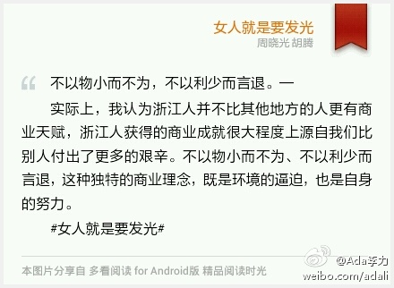
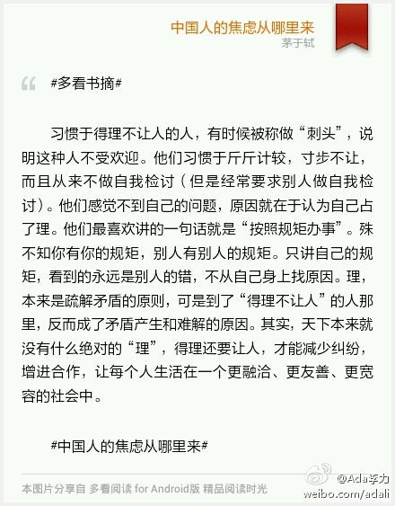
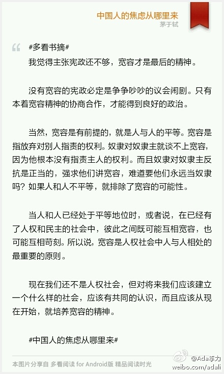
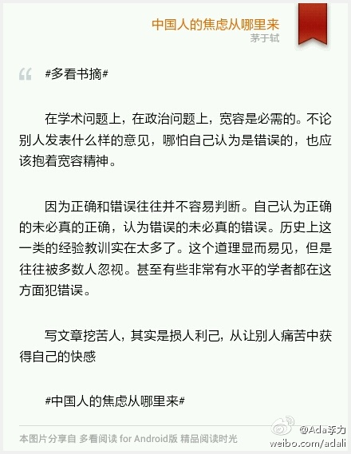
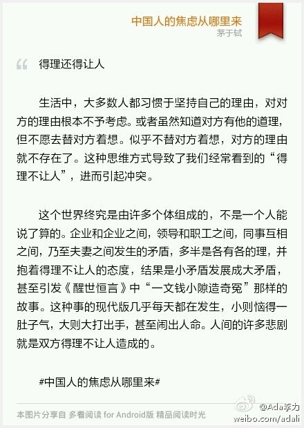
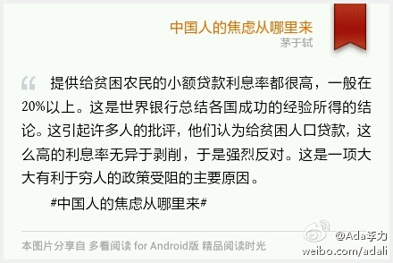
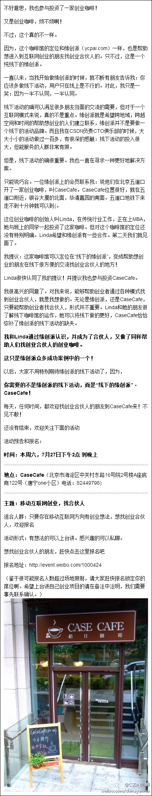
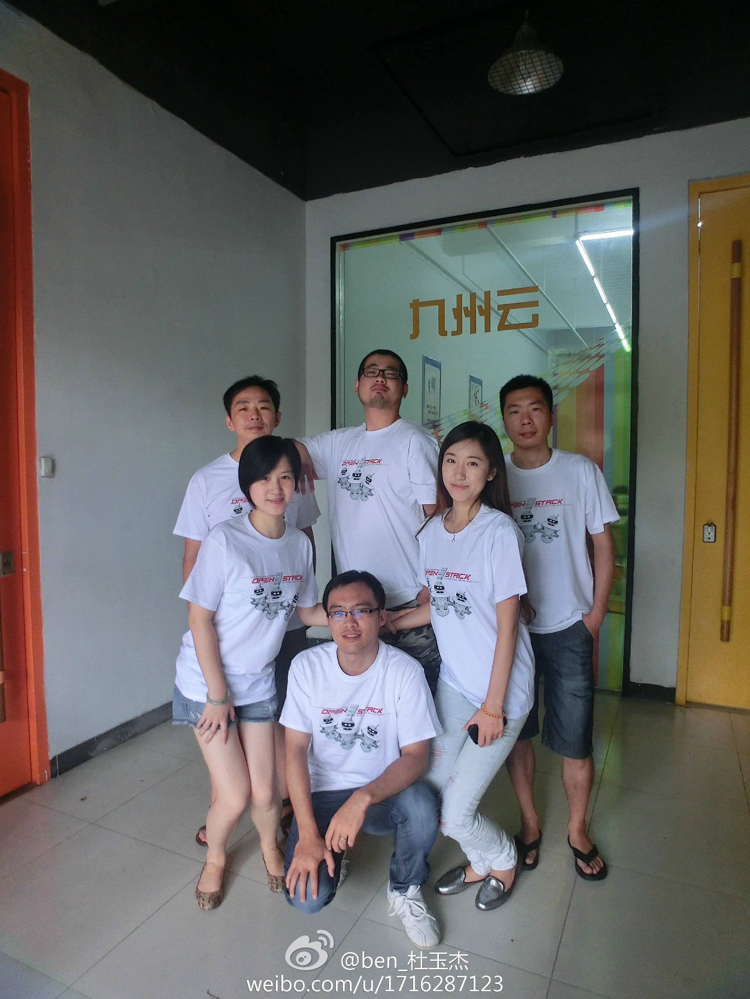

不以物小而不为，不以利少而言退。— 实际上，我认为浙江人并不比其他地方的人更有商业天赋，浙江人获得的商业成就很大程度上源自我们比别人付出了更多的艰辛。不以物小而不为、不以利少而言退，这种独特的商业理念，既是环境的逼迫，也是自身的努力。 #女人就是要发光# 
#多看书摘# 习惯于得理不让人的人，有时候被称做“刺头”，说明这种人不受欢迎。他们习惯于斤斤计较，寸步不让，而且从来不做自我检讨（但是经常要求别人做自我检讨）。他们感觉不到自己的问题，原因就在于认为自己占了理。他们最喜欢讲的一句话就是“按照规矩办事”。殊不知你有你的规矩... 
#多看书摘# 我觉得主张宪政还不够，宽容才是最后的精神。 没有宽容的宪政必定是争争吵吵的议会闹剧。只有本着宽容精神的协商合作，才能得到良好的政治。 当然，宽容是有前提的，就是人与人的平等。宽容是指放弃对别人指责的权利。奴隶对奴隶主就谈不上宽容，因为他根本没有指责主人的... 
#多看书摘# 在学术问题上，在政治问题上，宽容是必需的。不论别人发表什么样的意见，哪怕自己认为是错误的，也应该抱着宽容精神。 因为正确和错误往往并不容易判断。自己认为正确的未必真的正确，认为错误的未必真的错误。历史上这一类的经验教训实在太多了。这个道理显而易见，但是往... 
得理还得让人 生活中，大多数人都习惯于坚持自己的理由，对对方的理由根本不予考虑。或者虽然知道对方有他的道理，但不愿去替对方着想。似乎不替对方着想，对方的理由就不存在了。这种思维方式导致了我们经常看到的“得理不让人”，进而引起冲突。 这个世界终究是由许多个体组成的，不是... 
回复@YuanLiangDing:@CSDN高校俱乐部 已经在做类似的事情，现在只能覆盖一小部分大学生而已。 //@YuanLiangDing:你们论坛开展一下无偿授课嘛。到山里去，教那些孩子学编程。帮助改变他们的命运。招自愿者老师。经费找共产党要，不用也是腐败调。多帮助无辜人。@Ada李力:提供给贫困农民的小额贷款利息率都很高，一般在20%以上。这是世界银行总结各国成功的经验所得的结论。这引起许多人的批评，他们认为给贫困人口贷款，这么高的利息率无异于剥削，于是强烈反对。这是一项大大有利于穷人的政策受阻的主要原因。 #中国人的焦虑从哪里来# 
恭喜。这个咖啡馆有多少股东？@闫辉_Life加加:我刚刚参与投资了一家创业咖啡CaseCafe，在五道口。与其创始人就是在缘创派上认识并合作的，主题与缘创派一样，聚焦在帮助创业者“找互联网创业的合伙人”。7.27日下午 就有一场主题活动：对移动互联网方向感兴趣，想找创业合伙人的不容错过。这里报名 网页链接 了解更多看长微博。 
接下来要做什么？@三马:【收益权人信息公示】有2210位收益权人的信息公示在这里：网页链接 公示时间为一周，请各位尽快确认自己的信息，如有遗漏请联系我，在此特别感谢 @RubyEye1 同学的整理，让我们的活动又向前迈进了一大步
//@COSUG:#OpenStack#国内最佳实践分享，首次曝光，基于最新Grizzly版本，1.5W台VM，限量版体恤你还等神马？快快送上生日祝福！@ben_杜玉杰:#OpenStack #OpenStack3周岁庆祝活动，我和我的小伙伴们都准备好了，你们呢？赶快报名 网页链接 